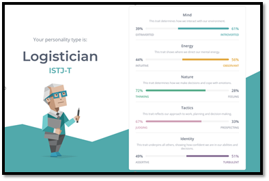
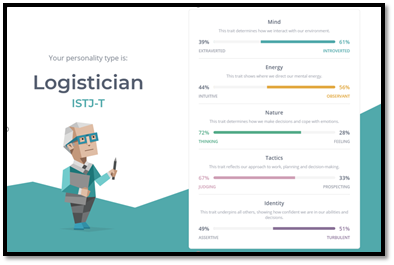

Nguyen Luu Quoc Bao
Quoc Bao is actually my first friend here in RMIT university. Although being an introverted, he is quite open mind and really like to share all of his idea and content just like me so he is the first person for me to pick as his team member. Moreover, most of his personalities match with me, and for that reason, it is very for us to work together in group projects or group assignments. However, the only difference between me and him is that in the nature aspect, he is more of thinking person, meaning everything he does is base on logical thinking, on the contrary, I am more of a feeling person, which means I tense to make decision based on what I feel, because of that, not only he is a great team member, he can also keep my head straight while doing many projects. Overall, Bao is creative and he can design images and many design user’s interfaces for our group to work with.